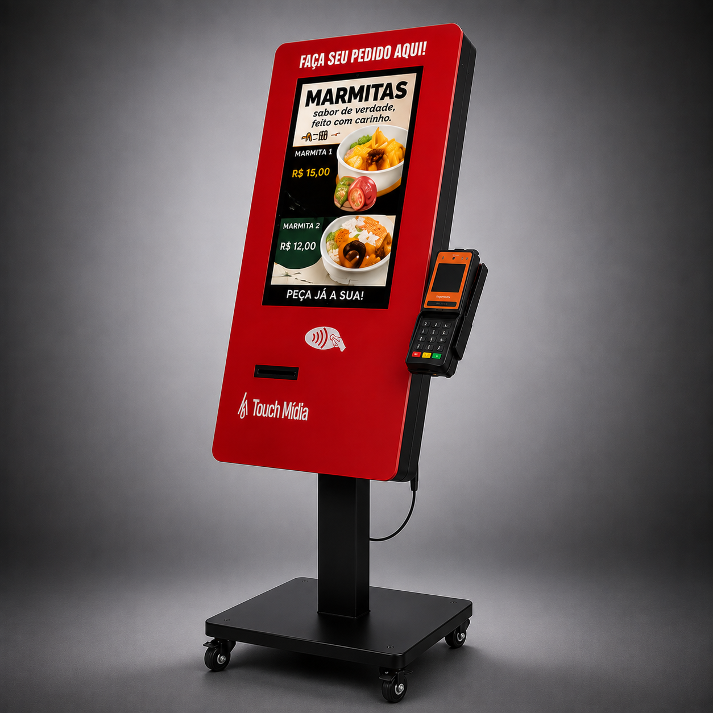
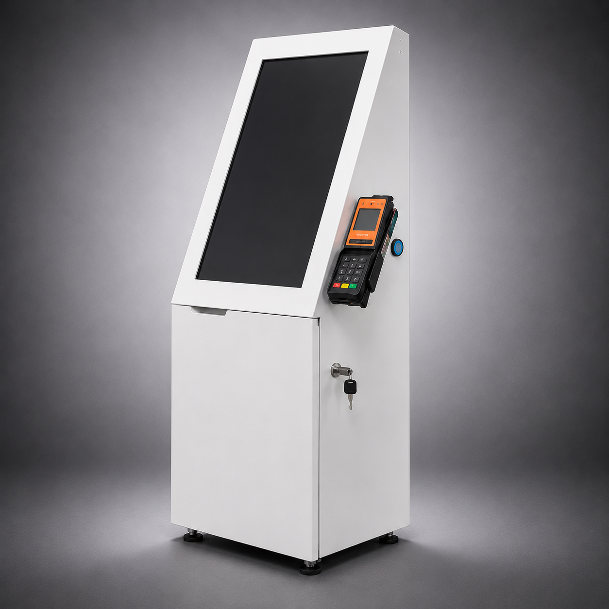
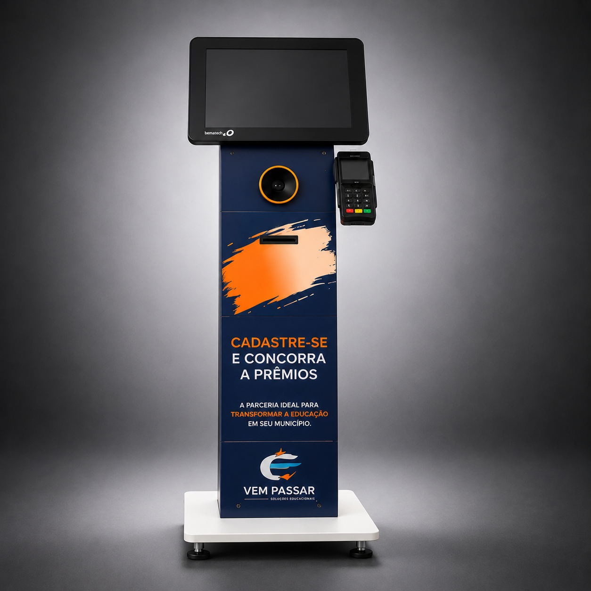
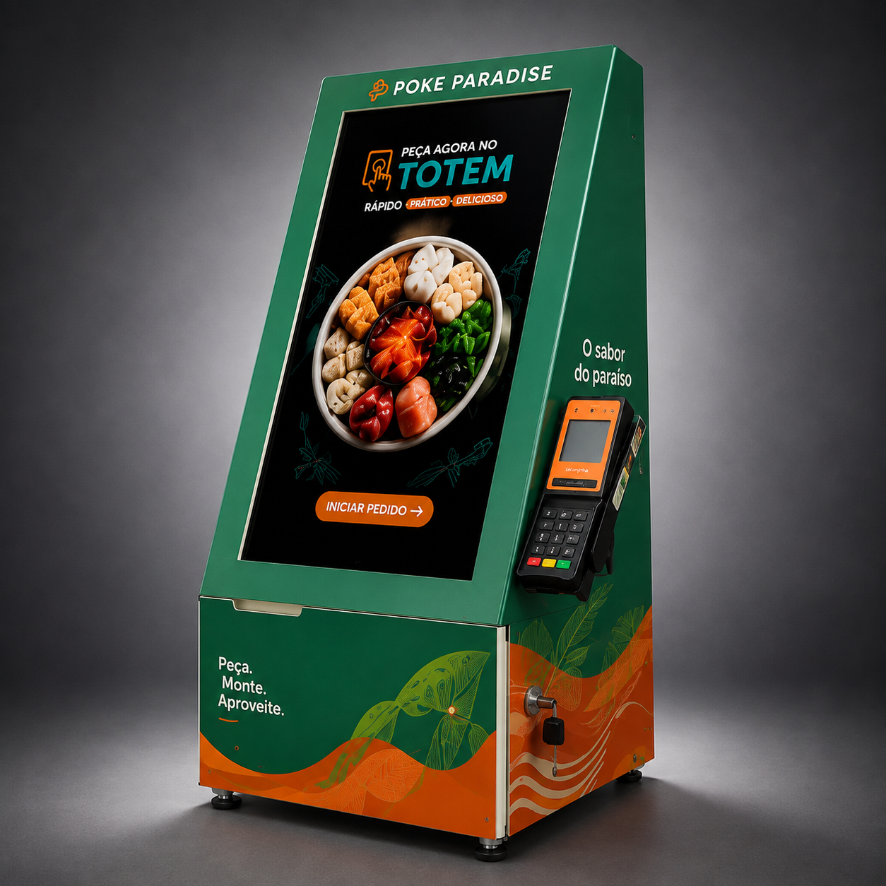
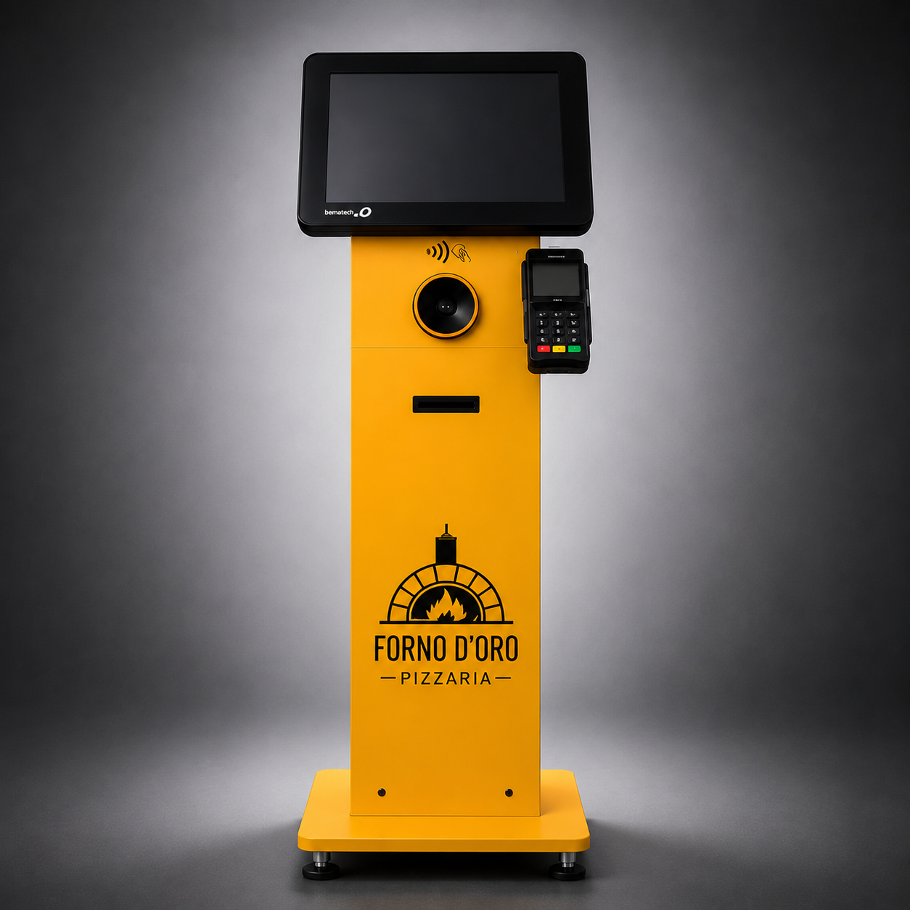
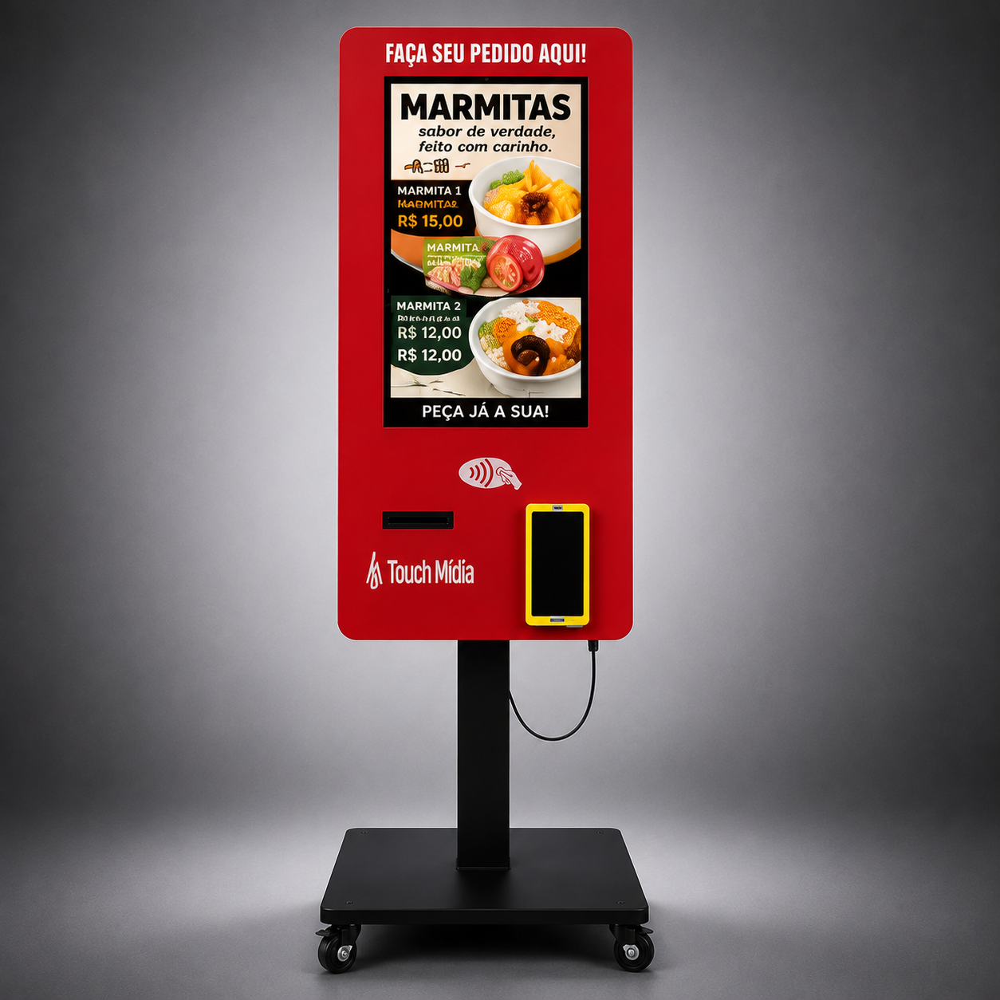
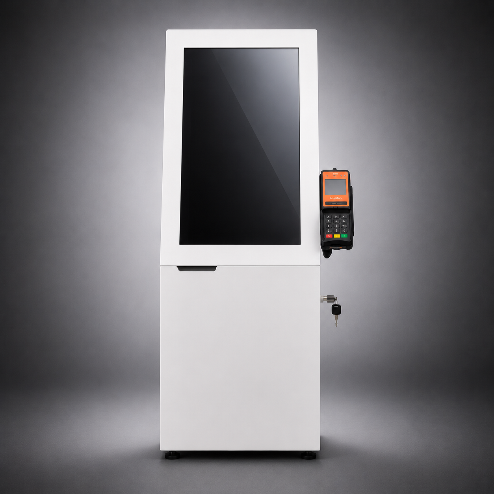

Atendimento mais rápido
Mais clientes atendidos nos horários de maior movimento.
Totens de autoatendimento desenvolvidos para simplificar o atendimento, dar autonomia ao cliente e preparar sua operação para crescer.

A tecnologia assume etapas repetitivas e sua equipe ganha espaço para focar no que realmente gera valor.
Mais clientes atendidos nos horários de maior movimento.
O cliente navega, escolhe e conclui a jornada no próprio ritmo.
Pedidos digitais ajudam a reduzir falhas de comunicação e redigitação.
Uma base tecnológica preparada para acompanhar o crescimento do negócio.
Modelos de balcão, pedestal e gabinete, com possibilidades de personalização visual e de componentes.
Uma solução de autoatendimento que pode ser personalizada para a identidade do estabelecimento.
Quero este modelo →
Formato versátil para ambientes que exigem organização, acabamento e integração de periféricos.

Uma alternativa para cadastros, consultas, senhas, pesquisas, eventos e operações de atendimento rápido.




O projeto pode ser adaptado ao fluxo de atendimento, ao espaço físico e às integrações de cada negócio.
Estrutura, adesivação, disposição de periféricos e identidade visual podem ser definidos de acordo com o projeto.
Solicitar um projeto personalizado →Entendemos o objetivo, o ambiente e a jornada de atendimento.
Definimos o modelo, os periféricos, a personalização e as integrações necessárias.
Preparamos o equipamento e apoiamos a entrada em operação.
Acompanhamos a solução e sua evolução conforme a necessidade do cliente.
Sim. A estrutura e a identidade visual podem ser adaptadas de acordo com o projeto.
O equipamento pode ser preparado para receber periféricos e meios de pagamento compatíveis com a solução adotada pelo cliente.
Sim. Também desenvolvemos projetos para cadastros, consultas, senhas, estacionamentos, saúde, eventos e outras jornadas de autoatendimento.
Entre em contato com nossa equipe. Primeiro entendemos sua operação para indicar uma configuração adequada.
Conte para a ACTUS o que você precisa automatizar.